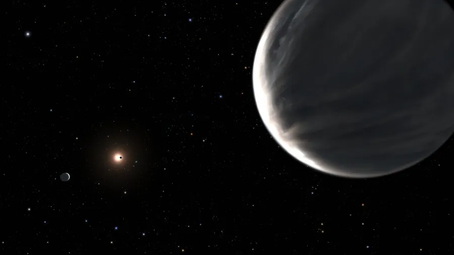

December 15, 2022
Kepler-138 c and d: two possible water worlds
Observations with the Hubble and Spitzer space telescopes suggest that the planets Kepler-138 c and d consist largely of water. They have more than three times the volume and twice the mass of Earth, and thus a much lower density.
Water was not detected directly. The conclusion follows from comparing size and mass with models: up to half of the volume would have to consist of material that is lighter than rock but heavier than hydrogen or helium. Oceans like those on Earth are not expected; a thick atmosphere of steam is more likely. The system is 218 light-years away.
Source: ESA/Hubble: "Hubble Helps Discover a New Type of Planet Largely Composed of Water." (heic2215), 2022-12-15